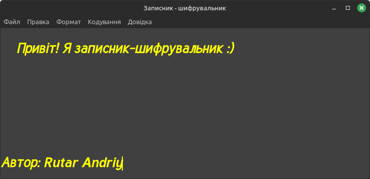

CodeBook v1.0
Програма CodeBook призначена для створення та редагування простих
текстових файлів. За своїм функціоналом вона нагадує стандартну
програму "Записник". Основною особливістю програми є можливість
шифрування та розшифровування тексту із застосування довільного ключа
шифрування (слова або фрази).
